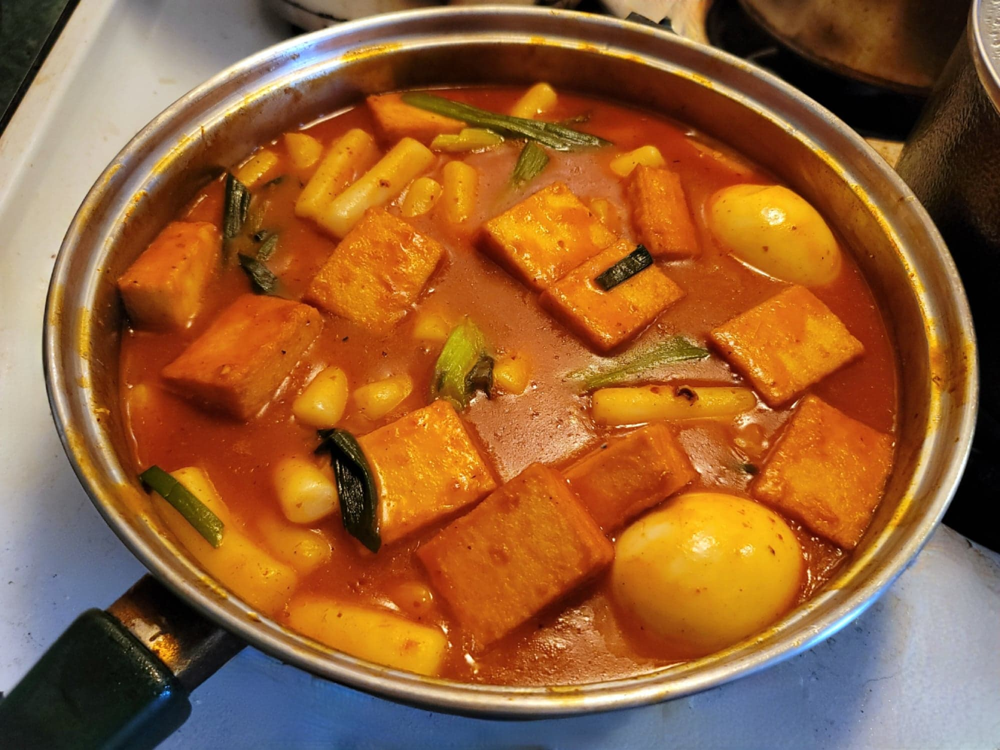

Tteokbokki

Ingredients:
- 1 lb Cylinder rice cakes
- 4 cups Water
- 8 large Sardines, about 2 cans
- 6x8 inch Dried kombu, 1 sheet
- 1/3 cup Gochujang
- 1 tbsp Gochugaru
- 1 tbsp Sugar
- 3 Scallions, cut into 3 inch pieces
- 2 Hard boiled eggs
- 1/2 lb Fish cakes
Instructions:
- Place the sardines, kombu, and water into a shallow pan. Bring to a boil and then cook over medium-high heat for 15 minutes.
- Strain the sardines and kombu from the broth. Mix in the rest of the ingredients and continue to cook for 10-15 minutes, continously stirring gently with a wooden spoon. Serve hot.